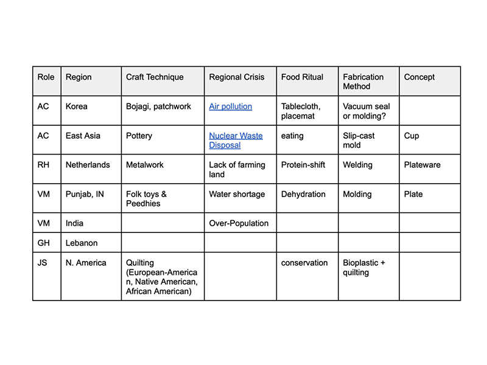
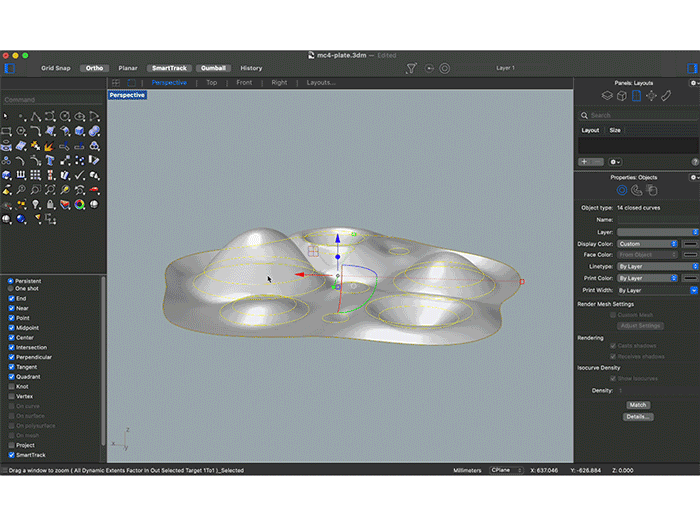
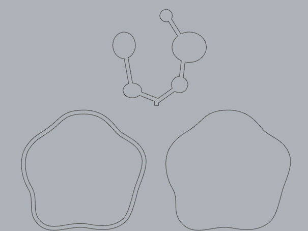
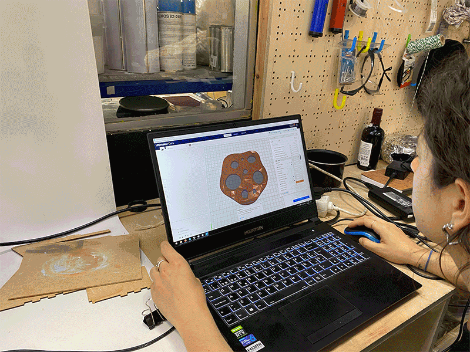
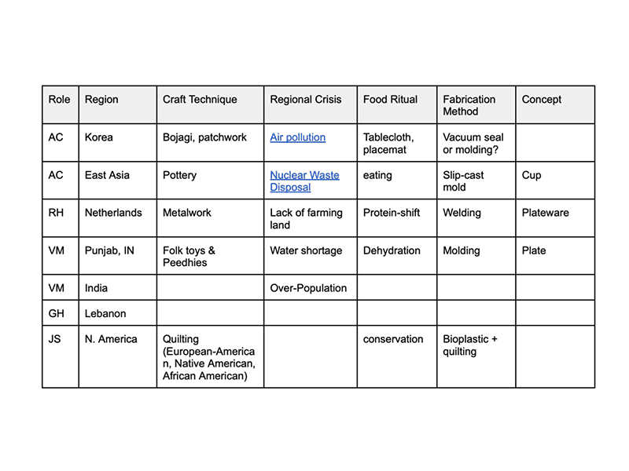
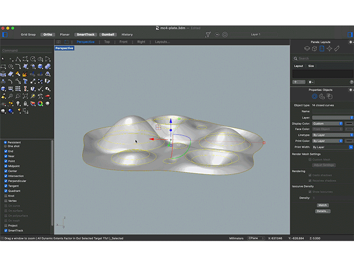
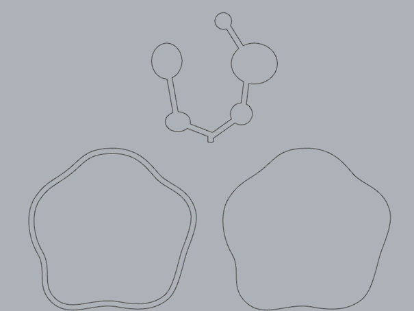
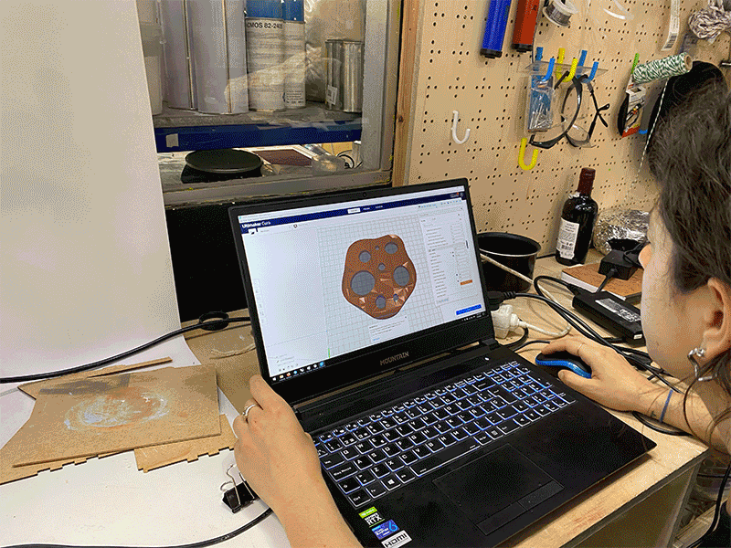

🗓 3 June 2022
Project Outline:

In researching the weak signals and current crises in Korea, I found a few topics that would be interesting including nuclear waste management and air pollution. Both are big issues that Korean is currently dealing with and which has a great impact on the land and people. I spent the first day making resarch on these crises, their effects on the environment, and imagining scenarios that might occur in the future if these crises were exaggerated. I focused first on the nuclear waste crises, and imagined a scenario where the underground burrying method fails, and radioactive waste leaks into the earth. This will cause the soil to be contaminated, and the clay used for ceramic tableware will be toxic.
Expanding on this concept, I sketched a design for a plate that is made of ceramics on top with silicone on the bottom. The plate has holes of different scales, where the silicone will inflate out of. The idea was to create a plate where the food doesn't touch the contaminated clay. I also wanted to combine raw and synthetic materials to create a hybrid look that embraced both past and future. The form of the plate was an interpretation of some images of radioactive and toxic soils. Since I wanted to try slip casting, I had the idea to first 3D print the positive, create the mold with plaster, then cast with slip. I made the 3D print with PET fillament, which took 9hrs to print. Within this process, I neglected to remember the "soft to hard" rule in molding and casting, and that my 3D print will likely get stuck in the plaster.

While the 3D print was running, I made use of my time by cuting and molding the inflatable silicone layer which lives under the plate. I used the same outlines from the Rhino 3D file to create the negative "air holidng" parts of the plate. I used a previous model from the soft robotics box to measure the height and gaps I needed in order to create the air pockets in the silicone and have it inflate. I laser cut three parts: the base, the frame, and the air-holidng parts in plexiglass and used superglue to set them in place. I used Ecoflex 00-50 from the brand Smooth-On, which was used as an example for the soft robotics class.

After consulting more Fab Lab tutors, I was alsmost positive that if I tried making a paster mold from the 3D print, I would lose the 3D printed form. Another issue was the 3D print had many small tiny holes in it which the plaster will get into and ruin the mold. So I decided to try printing with clay with the 3D paste printer and mixed up the clay (6% water) at the end of the week. Because there was a qeue for the paste printer, I wasn't able to use it until the following week. Also because my form wasn't a clear path, but rather a series of planes, I couldn't use the Grasshopper code which was made for paste printing. Dafni helped me use Cura (typically used for 3D printing with fillament) to prepare the file for the paste printer. It was not typical to use Cura, but someone in the fab academy had done it and documented it previously, so we knew it would work to some degree.
We played around with the fill layers, gaps, pressure, and speed, until we found the right consistency. With the fill layer, it was impossible to make it 100% filled, so we decided to make the bottom layers with gaps and the top layers full. We made two attempts and the second time printed all the way through. But halfway through the second print, the printing was breaking with air and made some air pockets within the form. It was risky to bisque fire the form since it was unstable and had many air pockets, so I decided to keep it as greenware to display.

Because this project is a speculative object based on a specific context, I don't know if replicating the form itself would be relevant. However, I am planning on creating an activity with prompts (either online or with cards like the Atlas of Weak Signals), where participants can recreate the framework and prompt for themselves to then create a speculative tool in the method of their choice. In the end, I think making the steps of the concept open-source may be more valuable than making the production process open-source, since many people may not have these fabrication tools readily availabe to them.
See our project repository here.
MicroChallenge Four
Craft traditions have been formed around local resources, materials, and land for thousands of years past. These ancient techniques have transformed our cultures and ways of life for centuries. Within these past few generations, the world has become hyper-globalized, industrialized, and digitized. Not only does this take a heavy impact on the environment and natural resources, but also transforms our connection and the stories with the material world. Our materials and tools are changing due to the process of production, lack of resources, and changing climates. Drawing inspiration from ancient knowledge systems of the world, we reflect on how these past traditions can be used to imagine and speculate on the rituals of our future, asking questions such as: What would pottery look like when our soils are contaminated with nuclear waste? What would food look like when we have depleted the land of farming?Project Outline:
- Using a traditional craft process or object from different indigenous cultures (N. America, Korea, Lebanon) and a current weak signal from the same part of the world, create a speculative tool for dining.
- Speculate on the changing ecologies of our local lands and planet through the common activity of eating.
- Investigate the effects of climate crisis and human intervention (ie. New soil compositions due to waste and chemicals, plastic waste in the ocean, etc.)

In researching the weak signals and current crises in Korea, I found a few topics that would be interesting including nuclear waste management and air pollution. Both are big issues that Korean is currently dealing with and which has a great impact on the land and people. I spent the first day making resarch on these crises, their effects on the environment, and imagining scenarios that might occur in the future if these crises were exaggerated. I focused first on the nuclear waste crises, and imagined a scenario where the underground burrying method fails, and radioactive waste leaks into the earth. This will cause the soil to be contaminated, and the clay used for ceramic tableware will be toxic.
Expanding on this concept, I sketched a design for a plate that is made of ceramics on top with silicone on the bottom. The plate has holes of different scales, where the silicone will inflate out of. The idea was to create a plate where the food doesn't touch the contaminated clay. I also wanted to combine raw and synthetic materials to create a hybrid look that embraced both past and future. The form of the plate was an interpretation of some images of radioactive and toxic soils. Since I wanted to try slip casting, I had the idea to first 3D print the positive, create the mold with plaster, then cast with slip. I made the 3D print with PET fillament, which took 9hrs to print. Within this process, I neglected to remember the "soft to hard" rule in molding and casting, and that my 3D print will likely get stuck in the plaster.

While the 3D print was running, I made use of my time by cuting and molding the inflatable silicone layer which lives under the plate. I used the same outlines from the Rhino 3D file to create the negative "air holidng" parts of the plate. I used a previous model from the soft robotics box to measure the height and gaps I needed in order to create the air pockets in the silicone and have it inflate. I laser cut three parts: the base, the frame, and the air-holidng parts in plexiglass and used superglue to set them in place. I used Ecoflex 00-50 from the brand Smooth-On, which was used as an example for the soft robotics class.

After consulting more Fab Lab tutors, I was alsmost positive that if I tried making a paster mold from the 3D print, I would lose the 3D printed form. Another issue was the 3D print had many small tiny holes in it which the plaster will get into and ruin the mold. So I decided to try printing with clay with the 3D paste printer and mixed up the clay (6% water) at the end of the week. Because there was a qeue for the paste printer, I wasn't able to use it until the following week. Also because my form wasn't a clear path, but rather a series of planes, I couldn't use the Grasshopper code which was made for paste printing. Dafni helped me use Cura (typically used for 3D printing with fillament) to prepare the file for the paste printer. It was not typical to use Cura, but someone in the fab academy had done it and documented it previously, so we knew it would work to some degree.
We played around with the fill layers, gaps, pressure, and speed, until we found the right consistency. With the fill layer, it was impossible to make it 100% filled, so we decided to make the bottom layers with gaps and the top layers full. We made two attempts and the second time printed all the way through. But halfway through the second print, the printing was breaking with air and made some air pockets within the form. It was risky to bisque fire the form since it was unstable and had many air pockets, so I decided to keep it as greenware to display.

Because this project is a speculative object based on a specific context, I don't know if replicating the form itself would be relevant. However, I am planning on creating an activity with prompts (either online or with cards like the Atlas of Weak Signals), where participants can recreate the framework and prompt for themselves to then create a speculative tool in the method of their choice. In the end, I think making the steps of the concept open-source may be more valuable than making the production process open-source, since many people may not have these fabrication tools readily availabe to them.
See our project repository here.